一支世界步道大會的影片打響淡蘭古道的名聲。在2018年底成為北路特派員，雨中踩線後又陸續在好天氣走訪了其他串連的山徑，美景洗禮下對淡蘭慢慢熟悉起來。
今年淡蘭古道中路整頓完畢，步道之外更推出服務據點，提供淡蘭古道相關資訊，也讓山行者有個歇腳處，身為淡蘭迷看到這消息立馬揪團一探究竟，想看看這些在地的店家如何去妝點闡述這段富涵故事的道路，文青風格吸引了十幾個朋友共襄盛舉，成員臥虎藏龍，有相關領域的工作者，更多有著豐富的活動經驗，大家一起體驗後分享想法，讓有興趣的人可以從不同角度切入，排出適合的路線，造訪淡蘭古道。
- 柑腳驛站 - 泰發炭窯 - 甘林威惠廟 - 台2丙 - 梅竹蹊路 - 注腳雙溪 - 魚行道路 - 貢寮街有機書店 -
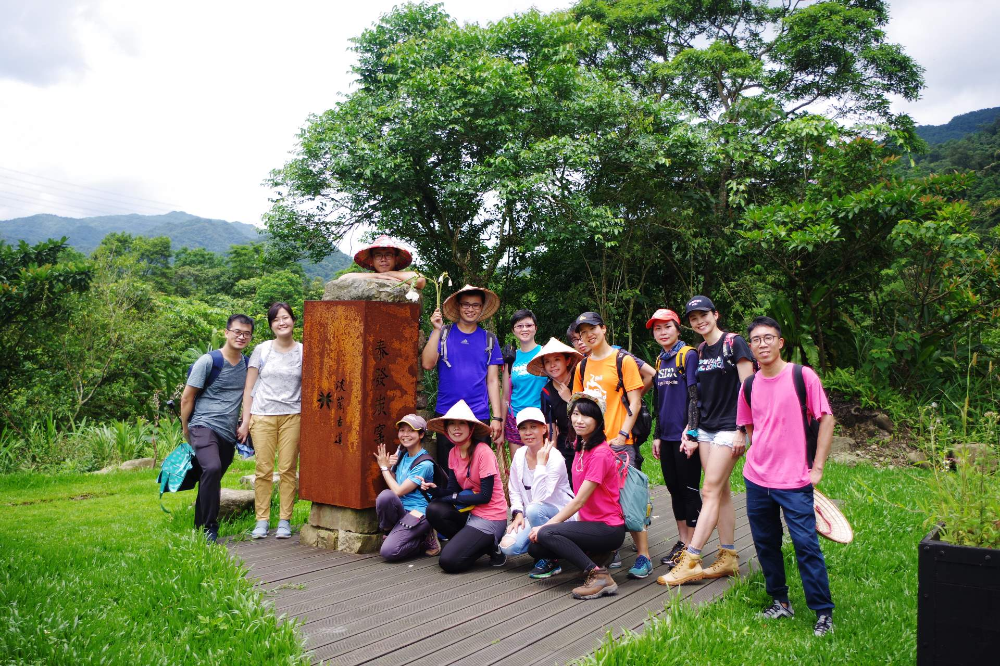
▲ 還缺三位之泰發炭窯前合照
區間車4138班次 6:03 萬華- 6:08 台北- 6:24 松山 - 6:28南港 - 6:34 汐科 - 6:37 汐止 --- 7:34 雙溪
為了好好把握白天的時刻，跟登山差不多抓了5點起床，搭上區間車前往雙溪，趕不上車的阿喵意外發現還有一班自強號也能從萬華到雙溪，速度更快，只是刷悠遊卡進站的人要承擔沒位子的風險。
國光客運781班次 7:45 雙溪車站 - 柑腳 分坑站下車
標示往長源社區的車也是可以到柑腳的，除了國光客運外還有新北市推出的免費公車"新巴士"F812班次，雙溪區公所網站有時刻表，不過到現場後發現班次似乎比公告的多一點，不用太過擔心沒有車班的問題。
／柑腳驛站
公車距離不遠，八點多就抵達第一站 - 柑腳驛站，是被田地所包圍的一棟新建物，老闆早已準備好迎接我們。
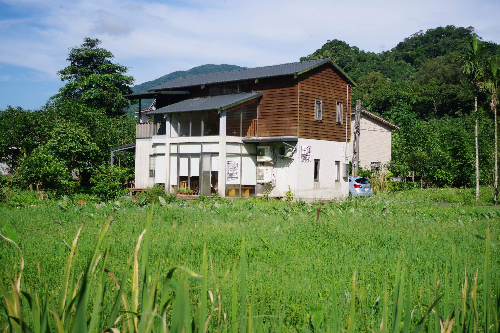▲ 田中的柑腳驛站
歇腳的同時品嚐了三種咖啡，都是老闆自己進生豆烘焙而成，先是經過厭氧處理的柑腳特調，日曬的非洲冠軍豆，最後是藝妓。由順口的柑腳特調開始，安插在中間明顯感受到日曬豆的風味較其他兩種來得濃郁，也因此後來的藝妓整體感偏淡，喜歡什麼樣的口味因人而異，但每一種都是老闆用心烘焙手沖的成果。
喝咖啡的同時也端出在地的草仔粿和蛋糕讓我們搭配食用，雖然很好吃，但重點擺在咖啡卻沒有選出跟咖啡比較搭的甜點，有點可惜。
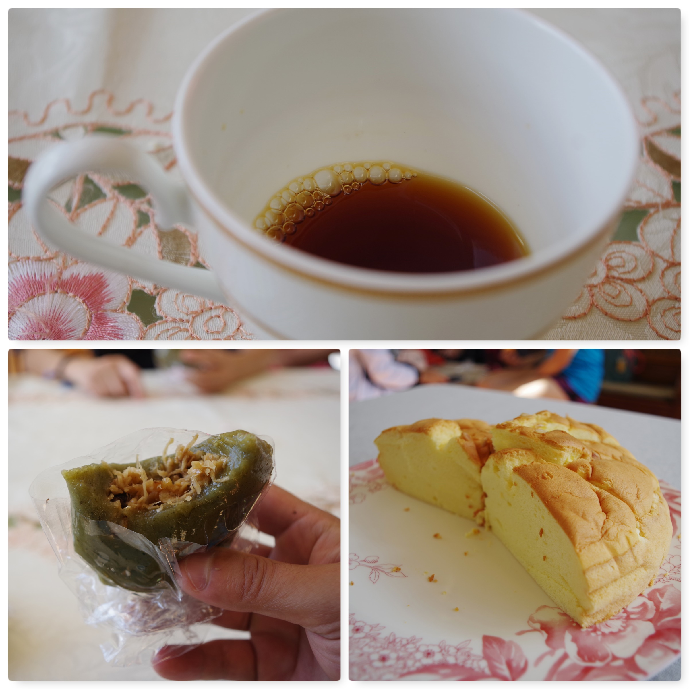▲ 參考價格 120元/人
柑腳是淡蘭古道中路的一個中間點，所以柑腳驛站除了提供咖啡外也有住宿及餐飲的服務，是一個很適合登山客交流經驗的中心處。在喝咖啡的期間聽了當年開採煤礦的故事，曾經發達的過往讓這小鎮擠進上萬個人，但這個區塊的礦脈較深，比起國外其他區域的開採要來得沒有經濟效應，因而沒落。
驛站外除了各式各樣的菜園還有老闆的寵物雞，準備未來收雞蛋而養，是我看過羽毛最漂亮的一隻公雞了，一定要特地放張照片來彰顯牠過得多好，第三代的小雞不斷群聚跟隨母雞移動，模樣煞是可愛。
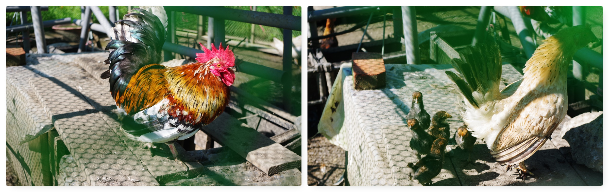▲ 漂亮公雞+可愛小雞
進到柑腳驛站後老闆才告知我們有另一團人8:30從台北開車出發，要等他們來後一起導覽柑腳。聽到這狀況的當下似乎也只能接受這安排，會建議接團時若有類似情形可以提早通知，方便協調跟安排時間，否則在等待的過程中我們特地早起前往的意義就已喪失，先前有請老闆幫忙抓下時間也因此大延誤。此外兩團成員組成差異較大，對導覽內容的期待也會有所不同。不過還是很感謝老闆在開放點餐外提供了導覽介紹的服務，帶領我們前往泰發炭窯跟威惠廟。
／泰發炭窯
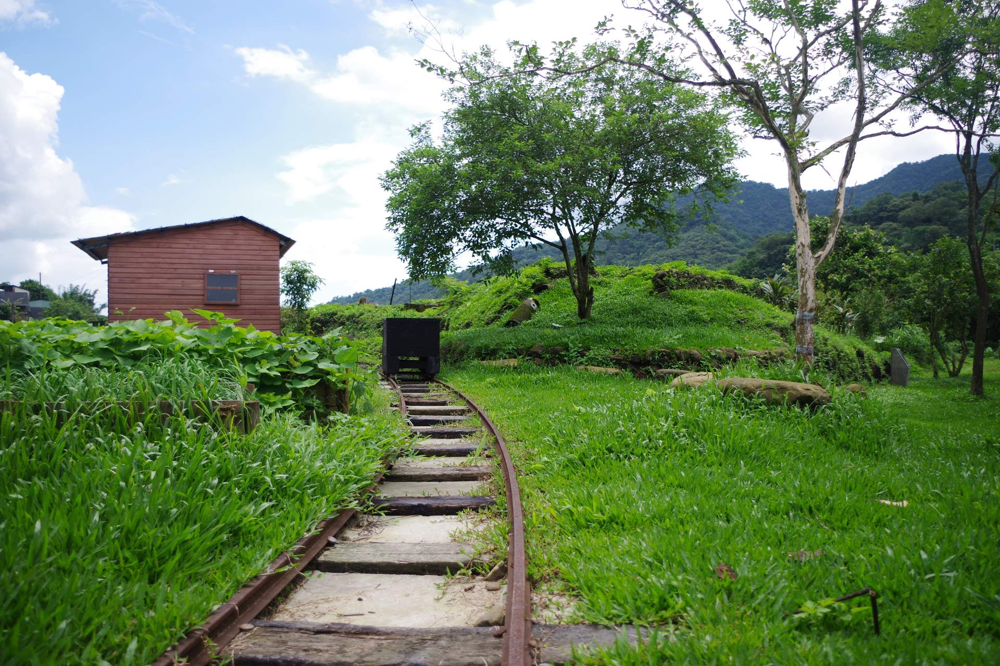▲ 三分車
保留三分車軌道的泰發炭窯經過整理後用一個很乾淨完整的風貌呈現，但其實以前挖礦人長期處在很差的環境中工作，容易得到矽肺病，不會待在我們所見的好山好水中。炭窯上下各有一條軌道通過，上方的是運送生煤使用，透過開口將煤投入，燒兩天兩夜後成為煤碳，再透過下方的軌道人力推往雙溪車站。炭窯本身是300年前用英國的工法取河裡石頭堆砌而成，與旁邊封閉的古橋同為相當珍貴的歷史資產。
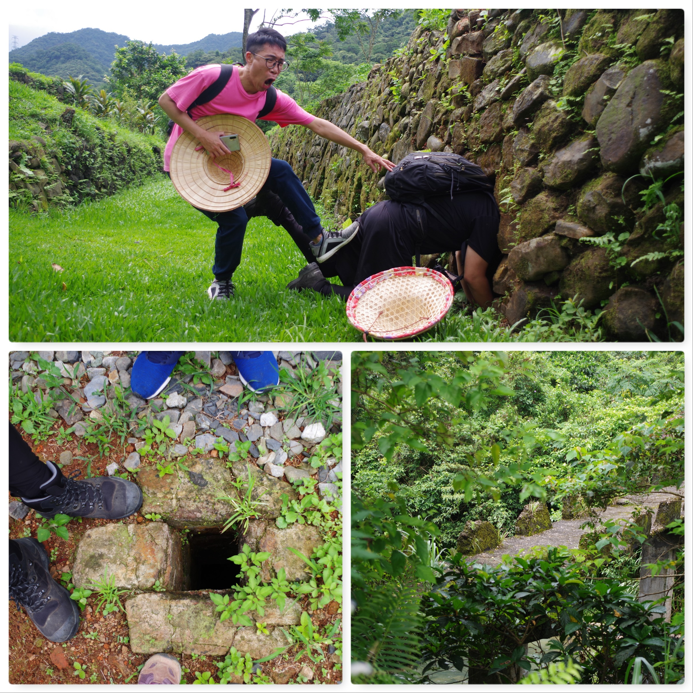▲ 炭窯下方開口與上方投煤口／運送生煤的古橋
沿著淡蘭古道標示牌的指引可以前往下一個點 - 威惠廟，越過平林溪上游的柑腳溪後會有一小段比較溼滑的路徑。
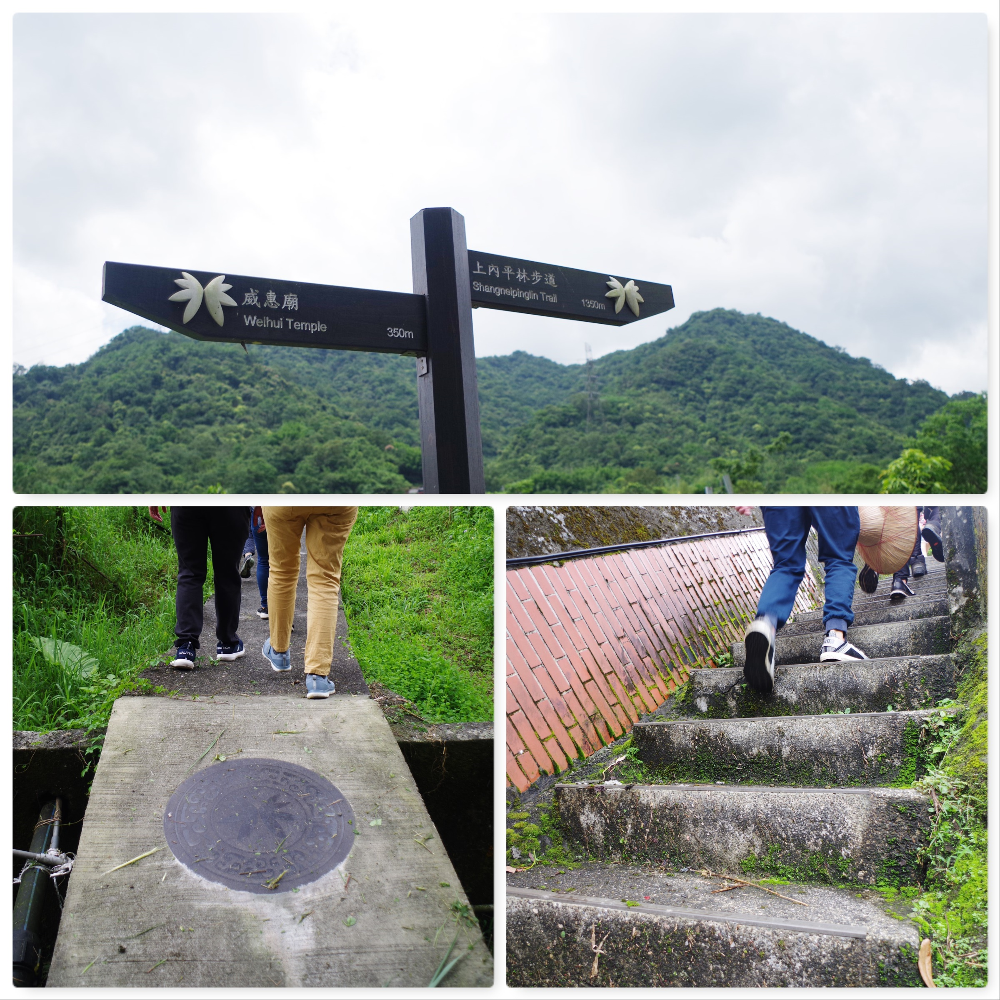▲ 淡蘭指標與裝飾階梯
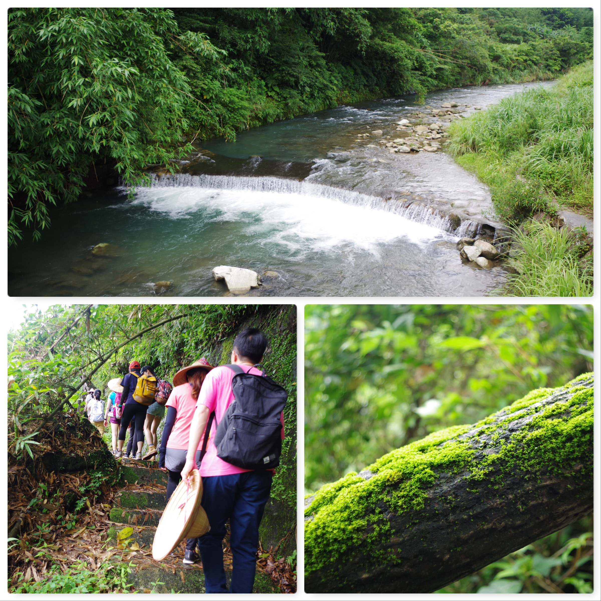▲ 過溪後的小路
／威惠廟
152年前蓋起的威惠廟供奉的是唐朝漳州的刺史陳元光將軍，也就是開漳聖王，由於先民是從福建漳州過來開墾的，也將地方信仰給帶了過來。威惠廟有公車可以抵達，有飲水機跟廁所，又位於淡蘭古道中路的中心點，可接往中坑古道及崩山坑古道，是拜訪淡蘭古道中路一個很好的中繼點或起終點選擇。
而牌樓外的柑林國小也見證了這個區塊的興盛到沒落，民國四五十年的時候學校有900多位學生，現今只剩6位。
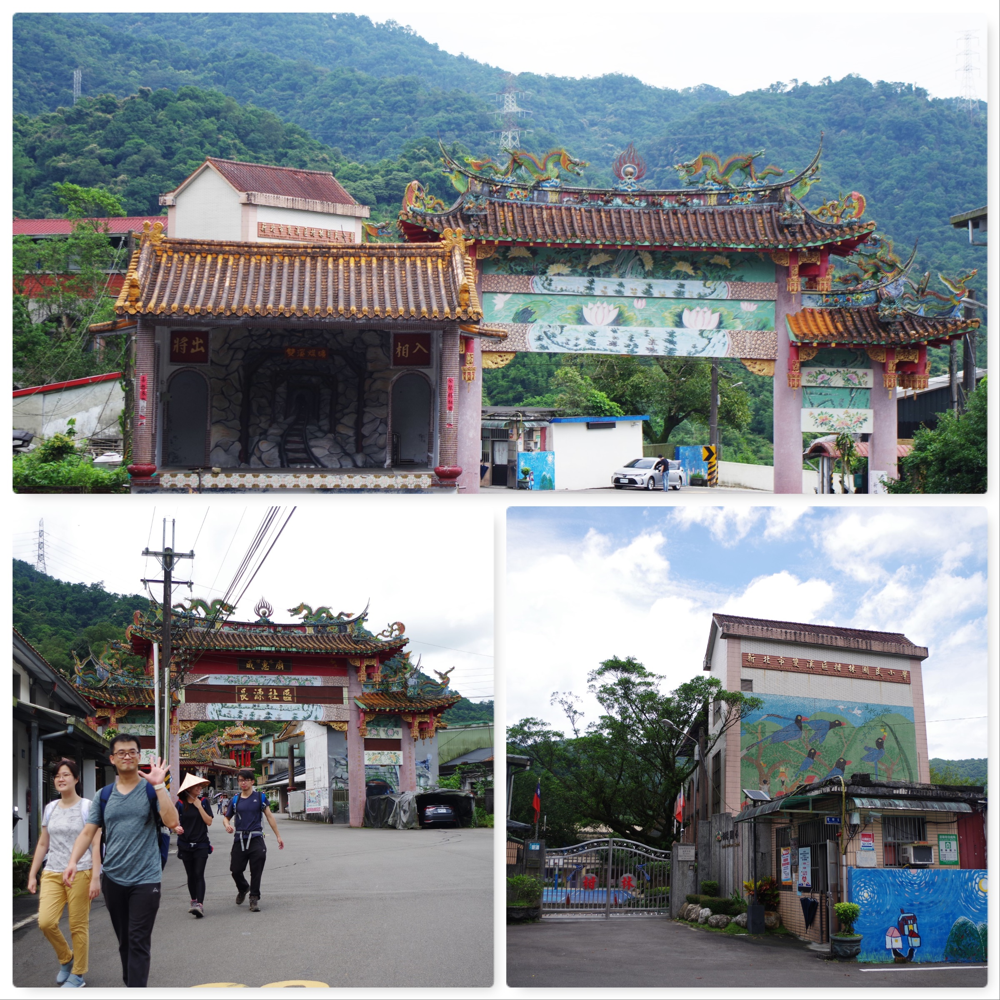▲ 威惠廟及柑林國小
由於行程耽擱，戴上柑腳驛站提供甲借乙還的斗笠趕忙前往台2丙，準備走回雙溪車站。
／梅竹蹊路
規劃了服務據點的串接因此沒有踏上古道的路段，從柑腳到雙溪其實是中路串往北路，中間是由雙溪自行車道來連結。
正中午的台2丙相當炎熱，從柏油路反射上來的熱氣讓人吃不消，幸好途中有荷花池旁的小市集可以稍做休息，吞下美味的茶葉蛋補充能量，灌進消暑的烏梅汁，整個人都復活了。
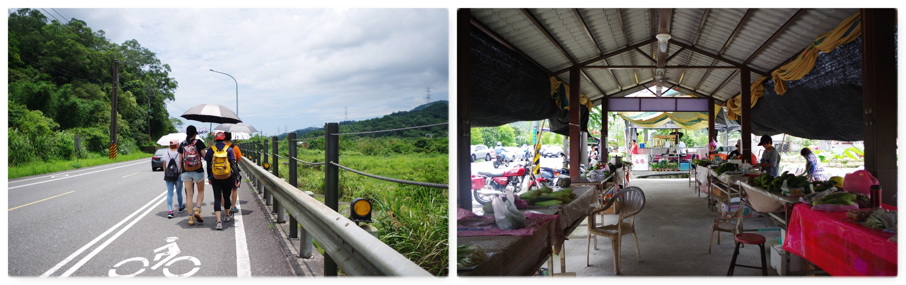▲ 台2丙及荷花池邊的市集
路上還遇到良心商店賣著自己種的蔬菜，好像是山徑上才會有的景象。碰巧主人路過視察，只瞄了一眼剩下多少菜就離去，也不著急去清點上方的投幣筒。
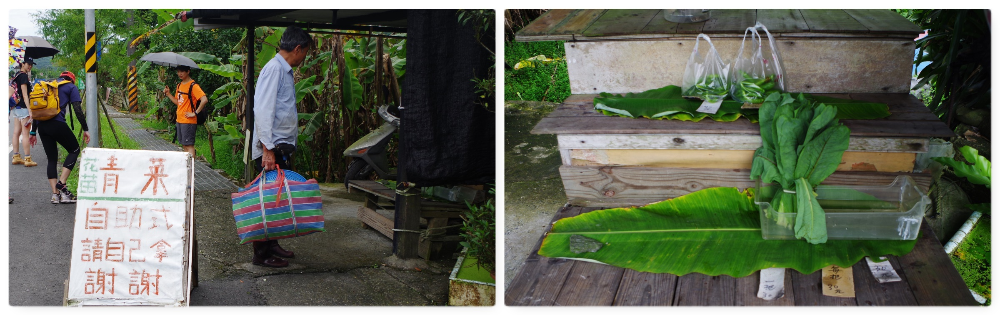▲ 良心菜店
順著自行車道離開台2丙，轉進梅竹蹊路，小路跟大馬路走起來的感受差異很大，靠在身邊的綠色多了，好像不這麼炎熱，少了呼嘯而過的車輛，行人占據整條馬路，也更有心思可以去看看花草昆蟲。
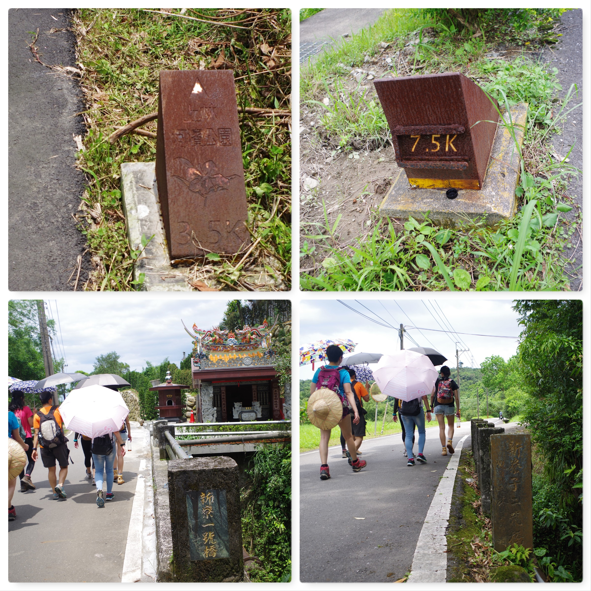▲ 自行車道標示與新寮一、二號橋
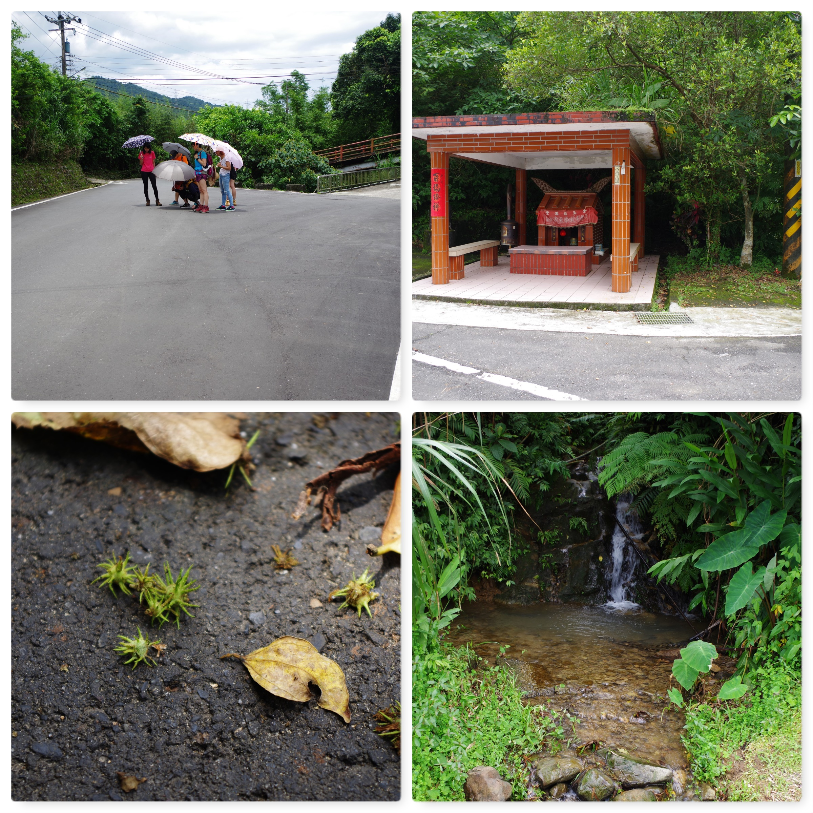▲ 路上的小東西
再度與台2丙交錯而過，巧妙地升起成為天橋從上方穿越，經過它就有進到另一個區塊的感覺，是雙溪市區。
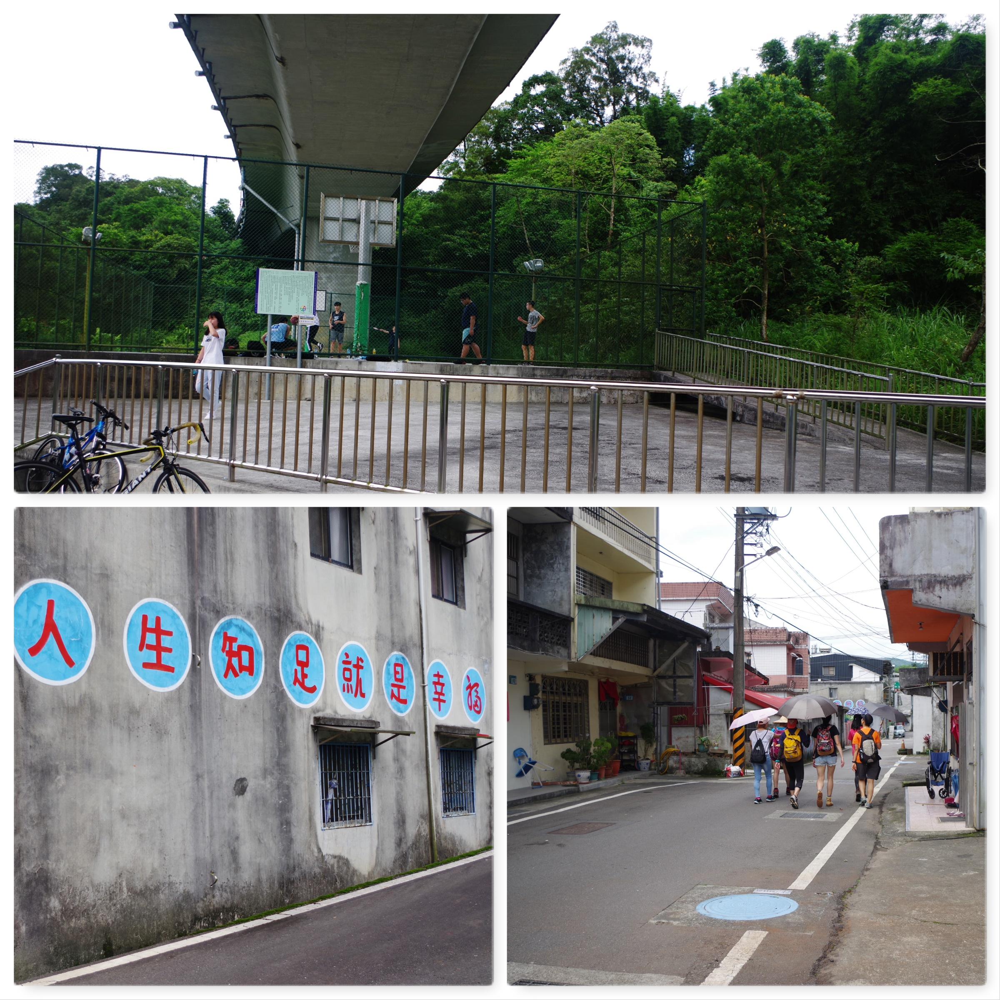▲ 台2丙下的球場與雙溪市區
／注腳雙溪
遲來的午餐是跟注腳雙溪的老闆娘預定。一般而言一餐是500元左右的餐點，考量時間與預算我們選了比較簡便的內容，以剛推出的淡蘭飯包為主餐，搭上一份60元的水餃。
淡蘭飯包主要是一顆野薑花粽加上南瓜糕，另外有檸檬乾、香菇乾及野薑花的妝點，一盒100元，我們在現場吃了粽子並動手做南瓜糕。
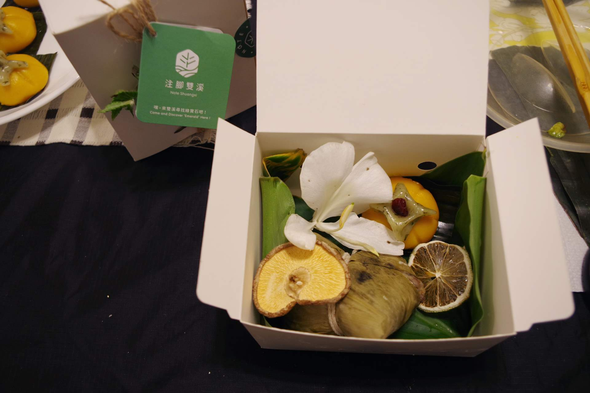▲ 淡蘭飯包
場地是在一個狹長的街屋中，由於我們人數眾多除了中間的長桌外還坐了一排人在後面的課桌椅組合，面對著牆吃飯會比較難兼顧講解內容，有示範時也無法好好待在位子上，因此團體報名可能要考量一下人數，盡量可以控制在一桌內會比較舒適。
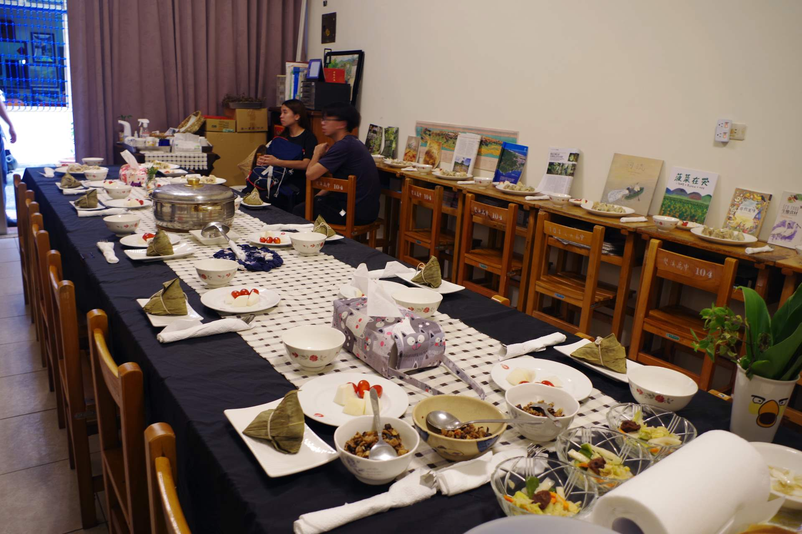▲ 狹長的場地
注腳雙溪所用的食材多與在地有機小農合作，其中就有吳恆毅的芋頭、張學良的南瓜及呂崇維的段木香菇，都可以透過有機農業的認證登記而在網頁上查到資料，有點可惜的是在食材介紹上強調有機健康，但比較沒有聽到耕作方式的不同以及這些農法對當地環境帶來的改變。
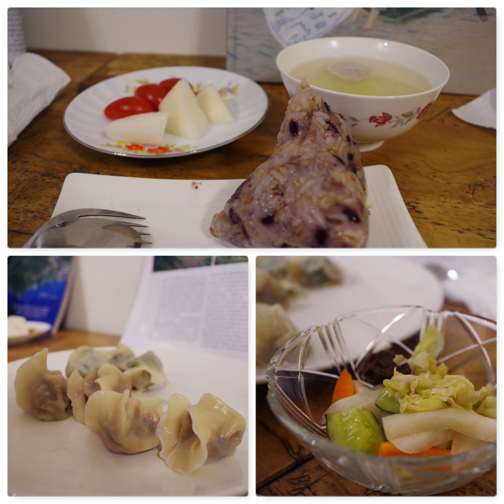▲ 野薑花粽／水餃／50元小菜
南瓜糕的製作簡單中帶點巧勁，捏麵、包餡、造型，可以發揮個人創意，也在玩樂中出現美食的雛型，人人都可以在美味外兼顧視覺效果，是有趣的過程。
整份餐點對我們而言，若是現場食用搭配簡單的手做是蠻好的推廣方式，但想像帶油的粽子加上有點黏性的南瓜糕與果乾一起放進飯盒中似乎不太適合，加上怕被壓壞的野薑花給人移動中必須小心照料的感覺，以我們的感受會比較推薦現場活動。
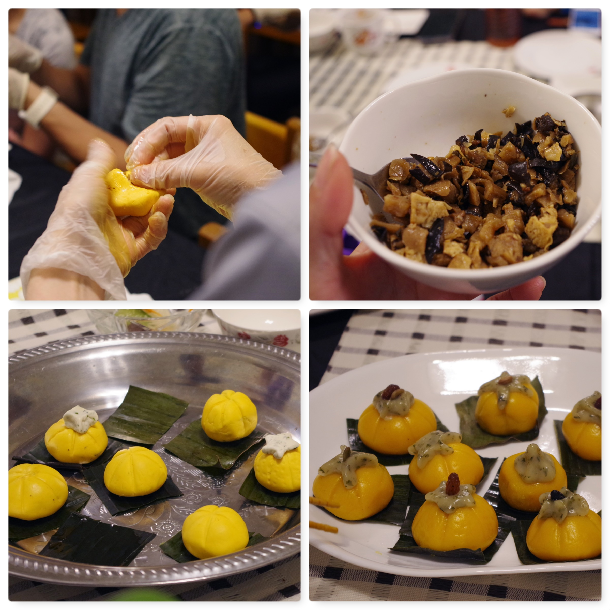▲ 南瓜糕製做過程
雖然從柑腳驛站一路呵護捧來的野薑花沒有派上用場，但老闆娘有用一朵花搭上檸檬乾泡茶給大家聞，在熱水的催化下自然香氣撲鼻，真的是聞起來很療癒的一杯茶，不過沒有試喝無法描述喝起來的味道，留待有緣人親自體驗。
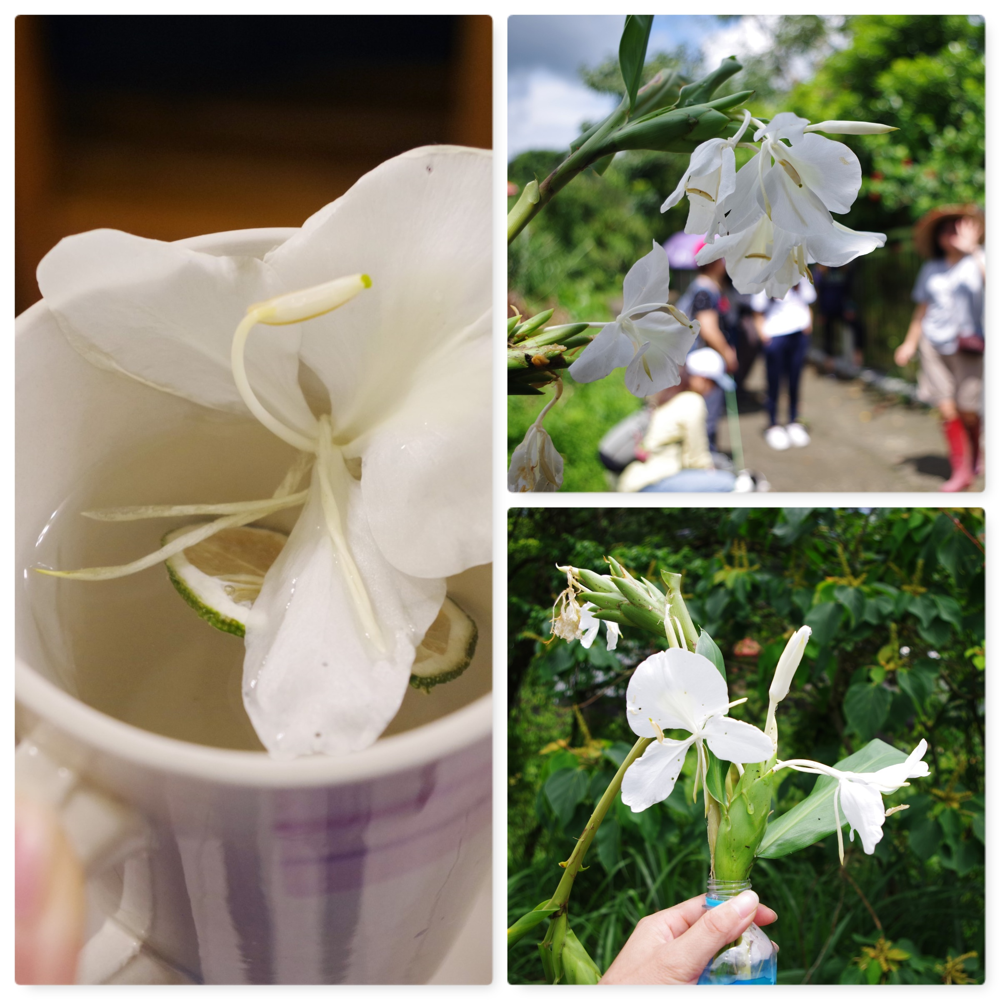▲ 野薑花檸檬茶
此外也嘗試了仙桃飯糰 (50元) 的製作，很特別的採用紅鳳菜、火龍果等天然色彩強烈的食材加入飯糰中，將拌好的飯放進塑膠袋或捲起的葉子中捏實，搭配一些創意而做成仙桃的模樣，蠻適合小朋友來動手的一樣料理。
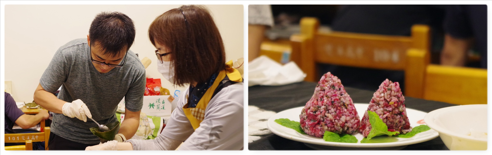▲ 仙桃飯糰
吃飽喝足後緊接著是一小時多的導覽，費用2000元，主要講解區塊是從注腳雙溪出發，經過雙溪老街、雙溪匯流口，到達海山餅店結束。
穿過一條小徑就是長安街與泰昌街口，有一道漂亮的石牆，通到底是渡船頭遺址。
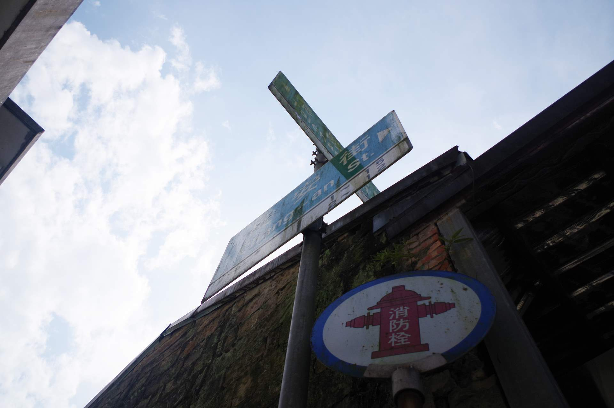▲ 路口
石牆上彎彎的拱型是以前交易用的門廊，因為雙溪的地理位置正為水陸運輸的交會點，大小船隻在此傳遞貨物，還可與草嶺古道相接。因地利之便形成熱鬧的商店街，又因多雨而發展出這樣的交易點。
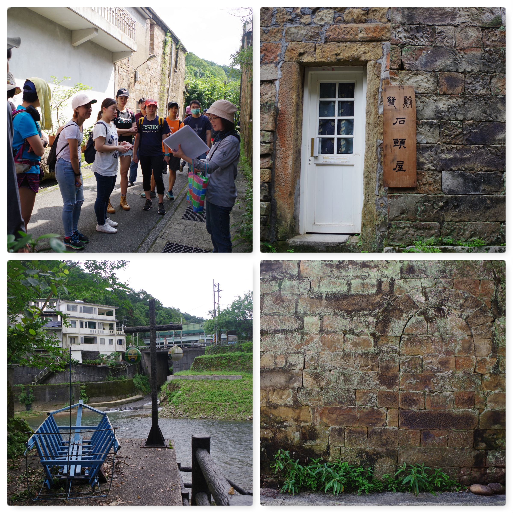▲ 石砌牆與渡船頭
雙溪顧名思義為兩條溪流通過之處，流經秀才之地的平林溪，加上孕育出重鎮的牡丹溪，結合而成雙溪。
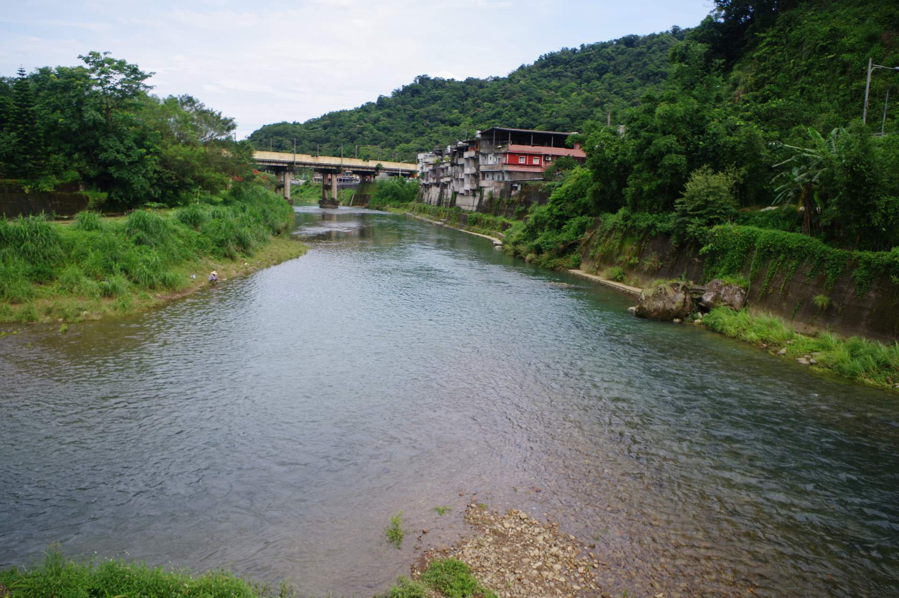▲ 雙溪匯流處
沿途有些古厝的介紹，包含仍在經營的林益和堂、後方的周家古厝還有鴉片館，以前都有一些很特別的故事而造成現有的發展，像鴉片館的主人是因為踢正步冠軍而取得賣鴉片的許可，而周家則是射箭冠軍而取得不凡的地位。
最後是現在淡蘭古道的推廣服務據點，上方的土地公廟是先前水災沖毀後神像仍駐留原地，居民認為土地公已經認定這個點為家，為避免再度淹水而將廟移往二樓，一樓作為活動中心的用途。
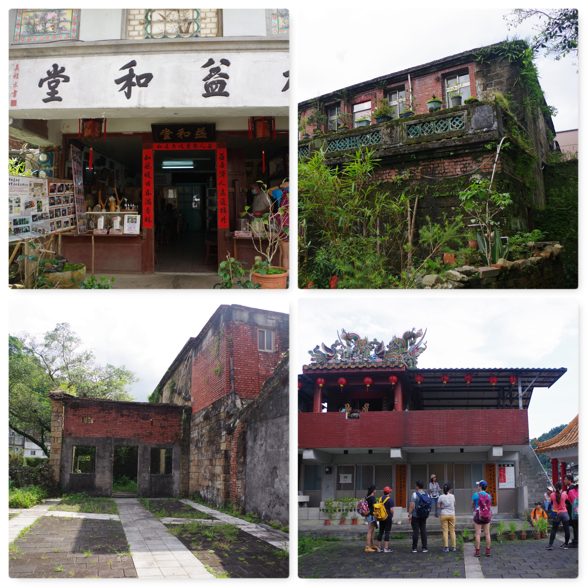▲ 古蹟們
在淡蘭古道的推廣中心內，黑板上有精緻的淡蘭古道地圖，加上一些視覺上的設計，提高了閱讀意願，可以從中更加瞭解這些古道的分佈。此外有一些社區活動的成果展示，包含繪畫及打油詩，透過在地居民的創意將一些在地特色寫進四句詩詞中，再融入導覽介紹。
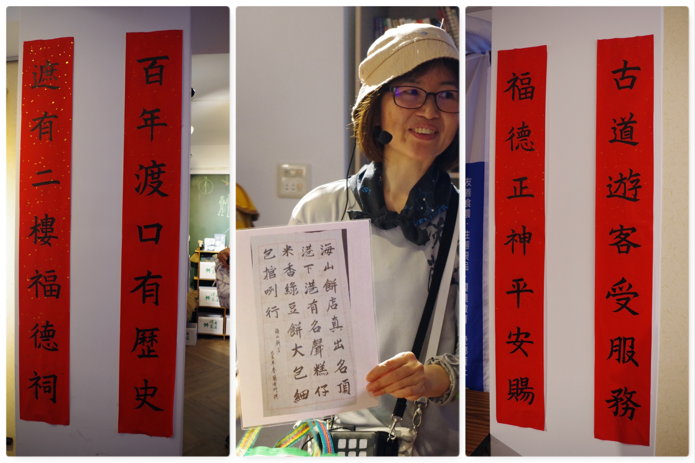▲ 雙溪及海山餅店的詩句
介紹的過程中可以感受到豐富的經驗，也深感老闆娘對雙溪區塊的深厚感情，隨手都有題材可以說明，但聽起來會比較隨性無系統感，此外像柱珠及門的卡榫介紹這樣的內容會讓人覺得不是很順，大家被帶往門的另一頭之後才解說，大批聽眾在外頭看不到講解的點，接下來才一個一個輪流探頭一望究竟，影響到後續講解，對團體的掌控要再做一些調整。
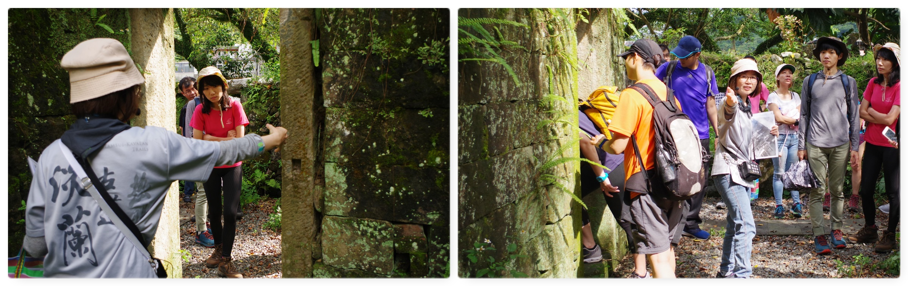▲ 門的細節介紹
這一個"佈告欄"則是來自於上內平林的土地公廟，被里長取來當佈告欄還加上斗大的三個字，後來覺得不妥才又改為古厝的裝飾，對古蹟的保存及維護方式需要有更加一致性的想法。
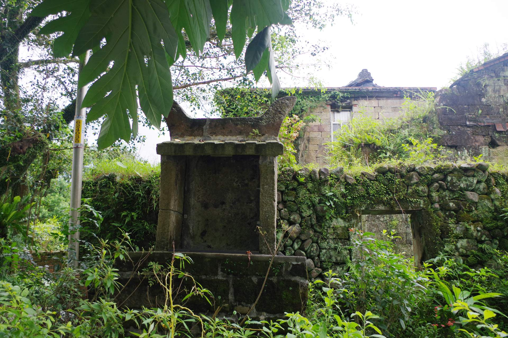▲ 被截半的土地公廟
老闆娘也很熱心地引領我們看一些網美拍照點，帶有很強的肌耐力蹲坐講解，只可惜我們不是網美團，大家緊盯著歷史文化相關的內容，想知道這裡跟古道間的關聯性，而沒有停留拍照，喜歡這類彩繪牆的朋友們應該會很開心，對我們來說期待的點可能不太一樣。
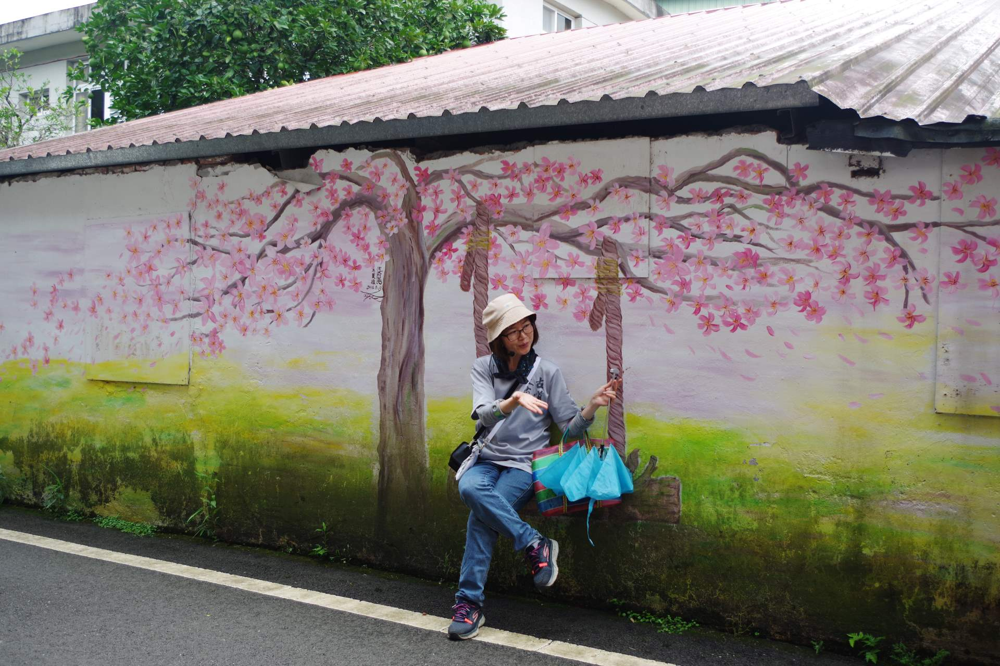▲ 網美拍照牆
最後收尾的海山餅店是我們網路上也有查到的名店，總是排滿了人還會賣到缺貨，提前電話預約了近二十個蛋糕，導覽之餘還領了滿手的名產。
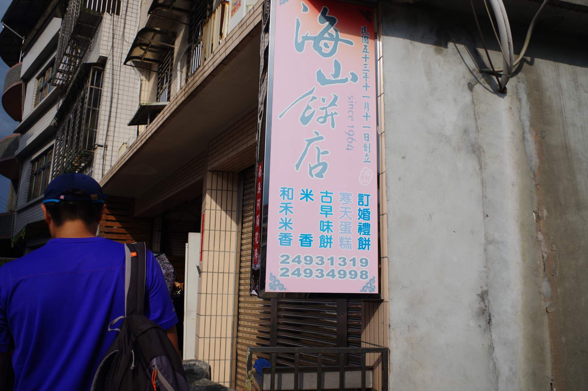▲ 有歷史的海山餅店招牌
／魚行道路
這段淡蘭古道北路的串接路段因為時間耽擱，怕最後一個服務據點關門而決定採用大眾運輸工具。雙溪車站前就有公車，與火車相輔相成，也讓旅客規劃有彈性，剛好一班新巴士進站，帶著我們沿著預訂路線前進。
雨中小巴自在的穿梭，省得淋雨悠閒地看著窗外景象，想著，這就是我們原本要走過的路阿。有時候覺得要爬個山都要考量很多交通問題，淡蘭古道沿線的路網齊全，可以說走就走，是友善的登山環境。我們在貢寮街口下車，轉角是一家吸睛的打鐵舖，鋤頭鐮刀佈滿窗口，彷彿聽見打鐵聲一錘一錘的打出農業的根基。
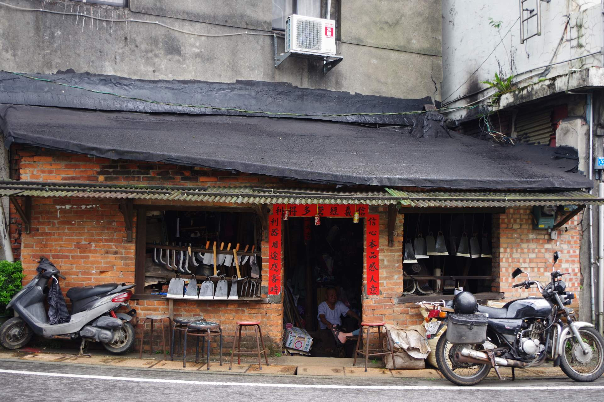▲ 轉角打鐵舖
／貢寮街有機書店
貢寮老街跟其他老街比起來店面不多，轉進人行步道，經過一個斜坡進入像是住宅區的地方，可能是時間，也可能是天氣，除了我們沒有其他遊客。貢寮街有機書店不算難找，旁邊是塊搶眼的空地，另一側的米店聽說很值得一看，但要碰運氣看是否有開門，我們就屬於無緣的人，只能看到狸和米的牌子。
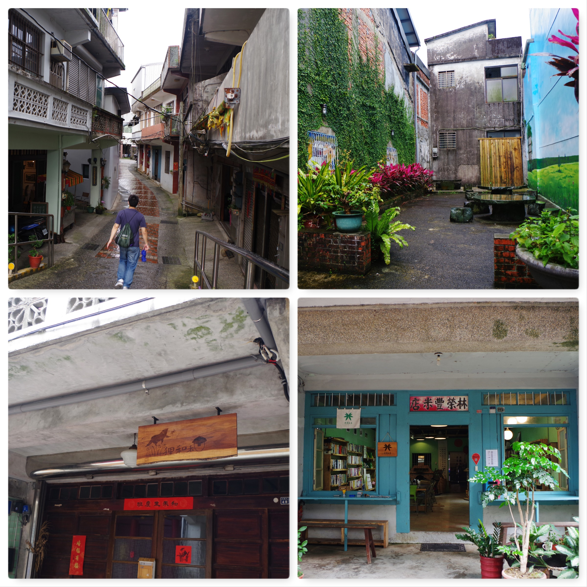▲ 貢寮老街與書店左右
書店本身的經營理念跟方針蠻吸引人的，只換書不賣書，提供文化交流的機會，像是漂書站的概念，雖說沒帶書也沒關係，可以下次再拿去，但像我們這樣的過客想到下次不知道是何時就會打起退堂鼓，比較像是一個友善地區居民的環境，提供在地一個閱讀的空間與機會。
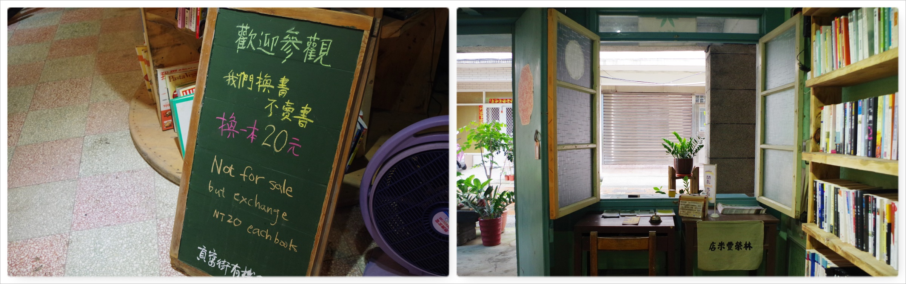▲ 只換書不賣書
整個空間也很開放，任人自由來去。雖然去之前有跟老闆打過招呼，老闆很阿莎力地說不用預約直接過去即可，到了現場保有他們經營風格，傳統長型街屋後面那一進貌似有人在活動著，但書店本身沒有人在，可惜的沒能有進一步的瞭解。
不過我們也很融入這個經營理念，自顧自地享受這個空間也翻起書來。可能接連幾天的大雨，儘管門戶敞開濕氣還是很重，擺放書籍的厚木頭看起來像是吸了水一般。書有新有舊，但從地面算起兩三層左右的書一抽出來，在書頁端幾乎都長了厚厚的霉，身為愛書人覺得書變成這樣好可惜，更浪費了這樣一個推廣的心態，在這溼氣重的區域可能要更注意環境的維護。
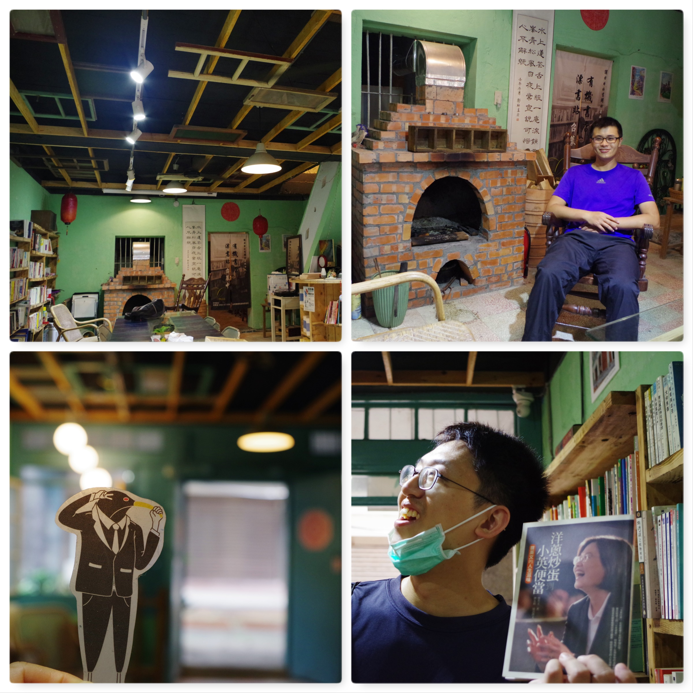▲ 只換書不賣書
告別書店後就往貢寮車站走去，這沿線不只是福隆有便當，貢寮的便當店也不容小覷，豐富的菜色可以嚐到不同種類的肉，完整一顆滷蛋搭上青菜，作為收尾行程心靈得到滿足。
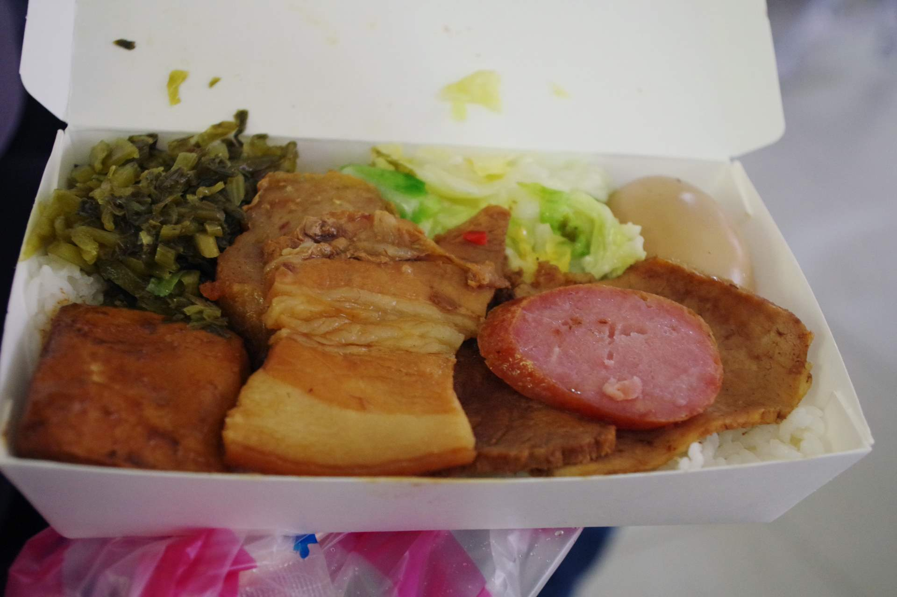▲ 貢寮便當
在雨後的陽光下結束這一天12小時的旅程。
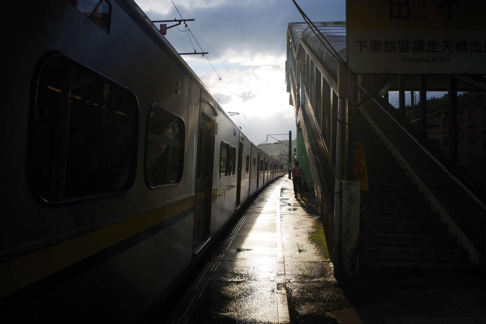